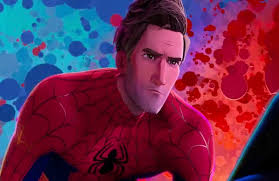

Miles Morales
Miles Gonzalo Morales é um personagem criado pelo roteirista Brian Michael Bendis e pela ilustradora Sara Pichelli. A estreia de Miles nos quadrinhos aconteceu em agosto de 2011, na revista Ultimate Fallout #4, pertencente ao Universo Ultimate da Marvel (Terra-1610).
Com 13 anos, Miles é filho de pai afro-americano e mãe porto-riquenha, sendo um rapaz negro de ascendência hispânica. Se Parker é conhecido por residir no bairro Queens, Miles é do Brooklyn. Os poderes são adquiridos quando, em visita ao tio Aaron, Miles é mordido por uma aranha geneticamente modificada que seu tio roubou da Oscorp.

Assim como Parker, Morales inicialmente hesita ao carregar o fardo de herói enquanto descobre a controlar as recém-adquiridas super-habilidades. Se com o Homem-Aranha original foi a morte do Tio Ben que serviu como ponto de virada, para Miles, o clique acontece após a trágica morte de Peter nos braços da Tia May e Gwen Stacy.
No enterro de Peter, Miles conversa brevemente com Stacy, chegando a questionar por que Peter decidira ser um herói e por que usava uma máscara. “Com grandes poderes, vem grandes responsabilidades” e “ porque não precisava que ninguém soubesse quem ele era pra ser um herói” foram as respostas que mudaram a percepção de Miles, o novo Homem-Aranha.
Inicialmente, Miles saiu para combater o crime com uma fantasia do uniforme do Homem-Aranha de Peter Parker comprada em uma loja, o que acabou pegando mal para a opinião pública, que encarou aquilo como de mau gosto e muito recente à morte de Peter. Após breve encontro com Nick Fury e com os Vingadores, Miles é presenteado com o que veio a ficar conhecido como seu icônico uniforme, que substitui o vermelho e azul de antes por um traje preto com detalhes em vermelho.
Os poderes de Miles são parecidos com os de Peter, mas há algumas diferenças. A aranha que o picou era mais desenvolvida do que aquela que picou Peter. Como consequência, o jovem passou a ter regeneração acelerada, camuflagem, rajada de veneno capaz de paralisar os oponentes, superforça, reflexos aguçados, capacidade de escalar paredes e o famoso Sentido Aranha.
O primeiro vilão que surge na vida de Miles Morales como Homem-Aranha é o Gatuno, mercenário que, por ironia do destino, é seu tio Aaron Davis. De resto, o garoto herdou muitos dos inimigos de Peter Parker, como o Duende Verde (Norman Osborn), Venom (Dr. Conrad Marcus), Escorpião e Mysterio (Quentin Beck) de outra realidade.
O melhor amigo de Miles é Ganke Lee, o primeiro a saber da dupla identidade do garoto e a ter de preservar a identidade secreta do novo Homem-Aranha. A Mulher-Aranha (Jessica Drew), embora inicialmente tenha torcido o nariz, também é uma aliada, bem como os colegas Vingadores Ms. Marvel, Amadeus Cho, Ciclope, Nova e o Homem-Aranha de Peter Parker do Universo 616.
Miles Morales é uma versão do Homem-Aranha no universo Ultimate. Ele possui habilidades únicas, como a invisibilidade e o veneno elétrico.
Peter B. Parker
Criado por Stan Lee e Steve Ditko, apareceu pela primeira vez em Amazing Fantasy #15 (1962).
Peter Parker, um estudante do ensino médio, é mordido por uma aranha radioativa, o que lhe dá superpoderes. Ele decide usar suas habilidades para combater o crime após a morte de seu tio Bem, aprendendo a famosa lição: “Com grandes poderes vêm grandes responsabilidades.
Superforça, agilidade, capacidade de escalar paredes, reflexos aprimorados e “sentido aranha”. Também é um brilhante cientista e criador de seus próprios lançadores de teia.
Spider-Gwen
A heroína que emergiu de um destino trágico para se tornar a "Spider-Gwen", uma das personagens mais icônicas de seu universo.
Gwen Stacy, também conhecida como "Spider-Gwen" ou "Ghost-Spider", fez sua primeira aparição nos quadrinhos na revista "Edge of Spider-Verse #2" (2014). Criada por Jason Latour e Robbi Rodriguez, ela pertence a uma realidade alternativa conhecida como Terra-65, onde ela, e não Peter Parker, foi mordida por uma aranha radioativa, tornando-se a heroína desta realidade.
Em sua realidade, Gwen era uma jovem comum até o dia em que foi picada pela aranha. Sua transformação em Spider-Gwen a colocou em rota de colisão com o crime organizado e a fez enfrentar perdas significativas, como a morte de Peter Parker, que, em seu mundo, se transformou no Lagarto e morreu em seus braços, espelhando a tragédia que Miles Morales viveu com a morte de seu próprio Peter Parker.
Assim como Miles Morales, Gwen possui habilidades aprimoradas após ser mordida pela aranha radioativa: força sobre-humana, agilidade, reflexos aguçados, habilidade de aderir às paredes e o famoso "Sentido Aranha". Além disso, sua incrível destreza musical como baterista ajuda-a a manter sua agilidade e ritmo no combate ao crime.
Os inimigos de Gwen variam em seu universo. No entanto, alguns dos vilões que ela enfrentou foram versões alternativas de conhecidos antagonistas do Universo Marvel, como Matt Murdock, que se tornou o Rei do Crime em sua realidade, e Frank Castle, que, como policial, a perseguiu implacavelmente. Ela também já enfrentou os vilões herdados do universo de Miles Morales, colaborando com ele em diversas ocasiões.
Gwen, assim como Miles, tem seus próprios aliados no combate ao crime. Além dos "Teia-Aranha" de outras realidades, como Peter Parker e Miles Morales, ela já lutou ao lado de Jessica Drew, a Mulher-Aranha, e de Cindy Moon, a Silk. Gwen também compartilha uma relação de amizade e camaradagem com Miles, com quem formou uma dupla poderosa ao longo dos eventos multiversais, enfrentando juntos ameaças maiores e mais perigosas do que enfrentariam sozinhos.
Tanto Gwen quanto Miles encontraram forças um no outro em momentos críticos de suas jornadas como heróis. Gwen, vinda de uma realidade devastada por tragédias pessoais, encontrou em Miles um espírito semelhante, que também carregava o peso da perda e da responsabilidade. Eles se tornaram amigos próximos e aliados recorrentes em diferentes eventos que envolvem o Multiverso, como o evento "Spider-Verse".